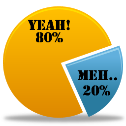

Hack-a-vator
Oleksii Tsai (oleksiit@), Oliver Wong (olivwong@), Tim Neumann (timmann@) — Amazon 2015
Why do people hate waiting for elevators?
(Hint: It’s not the length of the wait.)
S = P — E
David Maister, “The Psychology of Waiting Lines”, 1985Queuing psychologists: three givens of human nature
- We get bored when we wait in line.
- We really hate it when we expect a short wait and then get a long one.
- We really, really hate it when someone shows up after us but gets served before us.
Occupied time feels shorter than unoccupied time
David Maister, “The Psychology of Waiting Lines”, 1985Supplement/Replace posters

Public Service Announcements
Trailers
Polls/Simple Games
How do you feel about Brick-and-Mortar Amazon Stores?
Queuing psychologists: three givens of human nature
- We get bored when we wait in line.
- We really hate it when we expect a short wait and then get a long one.
- We really, really hate it when someone shows up after us but gets served before us.
“Uncertainty magnifies the stress of waiting, while feedback in the form of expected wait times and explanations for delays improves the tenor of the experience.”Alex Stone, “Why Waiting Is Torture”, New York Times 2012 Aug 18
Show TP95% Wait time
Parameterized by time of day, day of week
How long do I have to wait for an elevator, given that it's Wednesday noon? “3 minutes”? Screw that, I'm taking the stairs.
Self-healing/Self-optimizing system
- Busy elevators ⇛ High TP95 ⇛ Take stairs
- Idle elevators ⇛ Low TP95 ⇛ Take elevators
Queuing psychologists: three givens of human nature
- We get bored when we wait in line.
- We really hate it when we expect a short wait and then get a long one.
- We really, really hate it when someone shows up after us but gets served before us.
Anecdote
Don't show current floor
- Algorithm is a black box.
- Knowing the current floor doesn't tell you much.
- All I care about is ETA.
- Current floor is data that just infuriates you for no good reason.
UI Mockup
TP95: 47 sec

57°F
Need to move on with presentation
Further Incentivizing Stair-taking
- Badge-in at door to stairs
- Track scores
- Leaderboard
- Gift card/Phonetool icons
Evaluation Summary
(For judge's convenience)
Cost of implementation
Low cost, high return
- A couple of LCDs + Commodity PC per floor
- Already gathering the data anyway
- Can scale software (poster, trailers, games, etc.) as simple or complex as budget allows
Ease of use
Instinctual
- Watching trailers, so easy even I can do it
- Anyone can understand "It'll take 3 minutes to get to the lobby if you take the elevator right now"
- Most engineers at Amazon already familiar with TP95 terminology.
- If you're not familiar, your guess-interpretation at seeing "3 minutes" on the screen is probably correct.
- No training required, just have humans do what comes naturally
Value Generation
Low cost, high return
- Morale significantly improved
- Actual productivity improved
- Improved casual information dissemination
- Improved poll participation rates, paves the way for prediction markets
Uniqueness
???
- Depends on other presentations
Quality of Presentation
Judges are blown away
- QED.